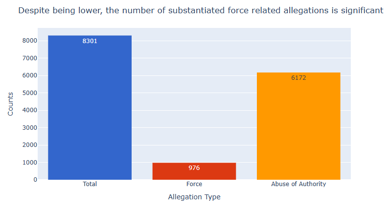

Proposition: In CCRB complaint data, force-related allegations are less likely to be substantiated than abuse of authority allegations.
FOR the Proposition

Design Decisions and Rationale:
- 3-year rolling average (Score: +1). Smoothing year-to-year noise with a rolling window makes the persistent gap between the two categories more legible without distorting the direction of the trend. This is an earnest technique commonly used in time-series reporting.
- Minimum sample threshold — exclude years with fewer than 40 allegations (Score: +1). Dropping low-count years prevents extreme, statistically unreliable values from misleading readers about the overall pattern. This is a transparent methodological choice disclosed in the subtitle.
- Shaded fill between the two curves (Score: +1). Filling the area between the Force and Abuse of Authority lines visually emphasizes the persistent gap and guides the reader's eye to the key comparison. It does not misrepresent magnitude — the shaded region faithfully reflects the actual difference at every point.
- Percentage (rate) on the y-axis rather than raw counts (Score: +2). Showing substantiation rates instead of absolute counts is the correct normalization for a proposition about likelihood of substantiation. Raw counts would conflate volume differences with outcome differences and would be misleading in the opposite direction.
AGAINST the Proposition

Design Decisions and Rationale:
- Absolute counts instead of rates (Score: -1). Switching from substantiation rates to raw counts of substantiated cases shifts the comparison from "how often" to "how many." This reframing is intentionally misleading relative to the proposition, which is specifically about likelihood (rate), not volume. A viewer focused on counts may incorrectly conclude that force allegations are a major accountability concern on par with abuse of authority.
- Including a "Total" bar alongside the category bars (Score: -1). Placing Force (976) next to the overall total (8,301) makes 976 look like a meaningful portion of complaints without clarifying that most of that total comes from Abuse of Authority. This implicitly inflates the perceived significance of the Force count.
- Direct value labels on all bars (Score: 0). Labeling exact counts is a neutral design choice that aids readability. However, in this context the precise numbers (976 Force, 6,172 Abuse of Authority) reinforce the count-based framing rather than correcting it.
- Distinct accent color for the Force bar (Score: 0). Using a visually distinct red-orange for the Force bar draws the viewer's attention to it specifically. This is a mild emphasis choice that serves the argument without technically misrepresenting any data.
Final Reflection
Working through both sides of this proposition highlighted how much framing choices shape perceived meaning even when no individual data point is fabricated. The supporting visualization uses substantiation rates — the appropriate metric for a claim about likelihood — and applies standard smoothing techniques to reveal a stable long-term pattern. Every design decision was disclosed in the chart itself (rolling window size, sample cutoff), making the analysis easy to scrutinize and reproduce. In contrast, the opposing visualization is technically accurate in every number it displays, yet it misleads by pivoting to a different metric (raw counts) and by juxtaposing the Force bar against a large "Total" figure. Neither visualization invents data, but one honestly answers the proposition and the other quietly changes the question.
This exercise clarified what distinguishes "earnest" from "deceptive" persuasion. An earnest visualization chooses the metric that most directly addresses the claim, discloses methodological decisions that could affect interpretation, and avoids visual encoding choices that exaggerate or minimize differences. A deceptive visualization exploits the gap between what a viewer will quickly infer and what the data actually supports — often by swapping metrics, omitting normalization, or using scale manipulations. The opposing chart here sits closer to deceptive because it exploits the natural human tendency to treat large absolute numbers as inherently significant, even when the rate (the relevant measure) tells the opposite story. The hardest lesson is that the line between the two is not always obvious: some choices — like the shaded fill or the color accent — are neutral or positive in one context and manipulative in another. Thoughtful visualization requires asking not just "is this accurate?" but "does this help or hinder an honest understanding of the data?"